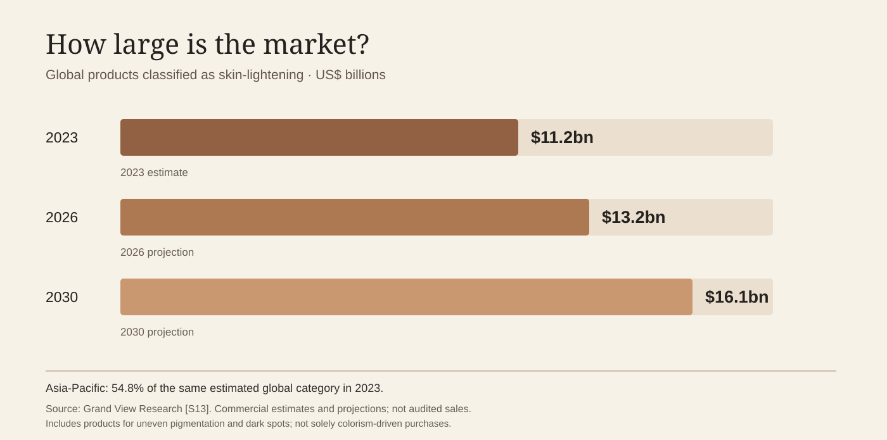
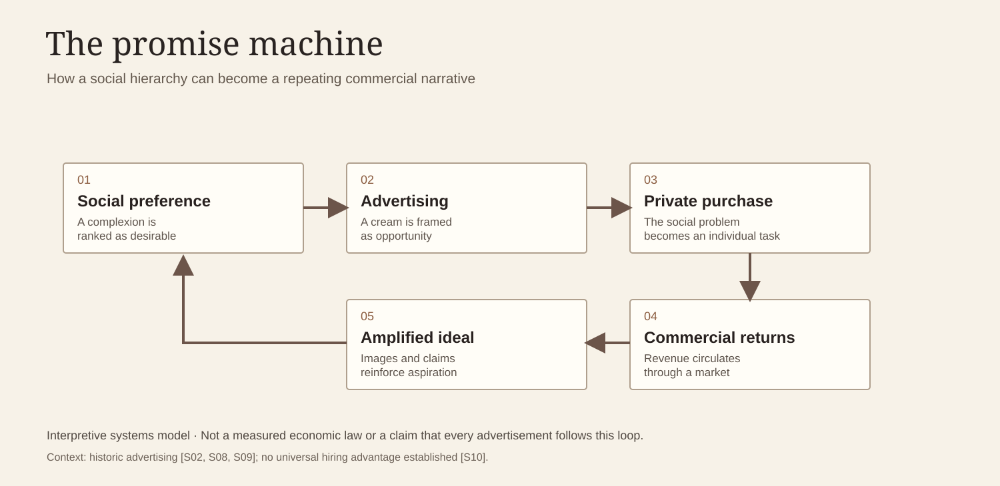

Intimacy and Commerce


Selling the Right to Belong
A fairness cream is bought in an ordinary transaction. A tube is taken from a shelf, paid for and carried home. Its use is private: the bathroom mirror, a routine before sleep, a moment before going outside. But the desires surrounding that purchase can be thoroughly public. Who is treated as beautiful? Who appears marriageable? Whose face seems appropriate for a reception desk, a screen, a family photograph? The skin-lightening business occupies the space between the small private action and the large social judgment.
This is the commercial mechanism at the heart of A Suitable Complexion: an industry can earn money from a hierarchy it did not invent. A classification becomes a disadvantage; an advertisement offers relief; the consumer pays for the possibility of overcoming it. Success is framed as individual transformation, while the social rule that made transformation attractive remains largely untouched.
The promise is not the outcome
Indian fairness advertising has connected lighter complexion to attractiveness, marriage and professional confidence. That connection is observable in the advertising itself. It should not be confused with proof that a cream reliably produces a better marriage, job or salary. The 2014 Advertising Standards Council of India guidance explicitly lists employment, promotion and matrimony among the areas in which ads must not depict darker-skinned people as inferior. A 2022 experimental hiring study, meanwhile, did not detect a statistically significant light-skin advantage in its specific recruitment-evaluation task. Both facts belong in the same story: the promise can be pervasive even when a universal economic premium is unproven. S08 S10
What is more firmly documented is that complexion enters matrimonial representation. Newspaper and online advertisements have long used descriptors such as fair and wheatish. Research has explored how expectations differ by gender and how prospective partners are presented through lists of measurable attributes. The grammar of search turns appearance into a filter, and the filter starts to feel natural because it is embedded in a routine of selection. S11 S12 S23
The market has a measurable size—and a boundary
Grand View Research, a commercial market-research firm, estimates the worldwide market for products it classifies as skin-lightening at US$11.2 billion in 2023, with the Asia-Pacific region accounting for 54.8% of that estimate. Its projection for 2026 is US$13.2 billion, not an audited 2026 outcome. The firm's category includes products marketed for conditions such as uneven pigmentation and dark spots; it is not a pure measure of colourism-driven consumption. The figures are estimates based on a proprietary methodology. S13
A different commercial study values India's entire skincare market at US$2.98 billion in 2026, and says facial care represents about 85% of that market. Those figures cannot be labeled 'India's whitening industry.' Facial care includes moisturizers, sunscreen, serums and treatments unrelated to altering a person's natural complexion. Comparing the global whitening estimate to this Indian all-skincare estimate as if they were the same category would create a false picture of the market. S14
These distinctions matter because the point of this exhibition is to make systems visible, not to manufacture a sensational number. An honestly labeled estimate can be more disturbing than an inflated one: billions of dollars are involved in products that sit near social narratives of complexion, whether or not every purchase is motivated by prejudice.
Who gets paid?
Manufacturers earn revenue from repeated product sales. Retailers and distributors earn a share of transactions. Advertising agencies, publishers and digital platforms are paid to bring the promise to buyers. Ingredient suppliers and packaging businesses service the market. Outside regulated supply chains, traders of adulterated or illegal products may also profit, while risks are pushed onto consumers. This is a description of the market's participants, not a claim that every company uses the same sales message or every product is unsafe.
It is tempting to describe this demand as inelastic—customers buying even when prices rise—or to claim that households sacrifice food or healthcare to afford fairness sachets. But neither proposition is established by the sources gathered here. They are research questions, not findings this website should state as fact. The same caution applies to claims that lighter complexion automatically reduces dowry expectations. The real documented links between colour, aspiration and advertising are sufficient without inventing a universal calculus of marriage and wages.
From a single audience to many markets
The industry's social imagination has never stood still. In India, marketers broadened their reach to male consumers; elsewhere in Asia, whitening products have circulated through facial care, soaps, body lotions and prestige serums. The packaging and vocabulary change with the audience. In Japan, whitening-oriented cosmetics had been sold long before the contemporary Indian fairness boom; Shiseido records a Whitening Cream introduced in 1937. In the Philippines, late-2000s advertisements could be startlingly direct about transformation. In Thailand, a 2016 campaign declared 'White makes you win' and was removed after criticism. S06 S25 S21
These examples should not be presented as one homogeneous 'Asian attitude.' They show distinct markets translating colour ideals into local forms of consumer aspiration.
The rebrand as economic document
One of the most revealing documents in the archive is not an old poster but a corporate explanation of a name change. In 2020, Fair & Lovely became Glow & Lovely. Hindustan Unilever's public account says its advertising had already shifted in 2019 toward skin clarity, even tone and radiance, and its company reporting describes the rebrand as part of an inclusive beauty strategy. The brand also established programmes supporting education and careers; its current website says the associated platform has over 1.25 million registered women. These are company statements and should be presented as such. S09
A renamed product should not automatically be assumed to have an unchanged chemical formulation; HUL says its formulation has evolved. Nor does new language by itself settle whether all vestiges of complexion hierarchy have disappeared. For this exhibition, the interest lies in the historical shift in what a company considers publicly marketable: from fair to glow; from an explicit shade ideal to a seemingly universal language of improvement.
Commerce returns to the family album
The portraits at the centre of the exhibition provide the counterargument to the advertisement. These people have already been invited, hugged, photographed and remembered. They do not need to buy the right to appear beside one another. The coloured blocks are an interruption imposed from outside, a reminder that social systems can reach the most intimate spaces without ever appearing as a law or an institution.
The business is real. The promises are carefully made. The cost is unevenly distributed. And the essential question remains: why should someone have to purchase what should never have been conditional—dignity, possibility and belonging?
Pull quote: The advertisement offers a private solution to a public prejudice. The sale succeeds without needing to change the prejudice.